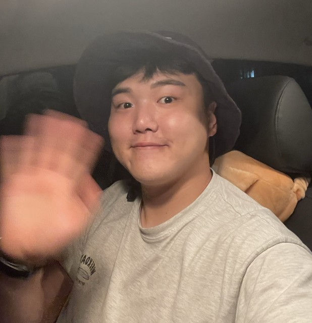

모바일 게임의 개발과 출시, 라이브 운영을 경험한 Unity 클라이언트 개발자입니다. 신규 개발과 인수 운영을 포함해 30개 타이틀의 출시·운영에 참여했고, 모바일 게임을 WebGL과 플레이어블로 옮기는 작업도 해 왔습니다. 플레이어블은 기획부터 Unity 구현, 매체별 단일 HTML 빌드와 납품까지 맡으며, 21개 광고 네트워크 변환 파이프라인을 직접 만들어 운영합니다. 최근에는 해달스도쿠를 1인 개발해 Google Play에 출시했고, React·TypeScript 기반 Toss 미니앱 5종을 공개 운영하고 있습니다.
퍼즐·머지·디펜스·러너 등 여러 장르의 모바일 게임을 개발했습니다. 신규 타이틀 제작, 기존 프로젝트 인수 운영, WebGL 포팅을 모두 경험했습니다.
사내 프로젝트와 외부 납품 프로젝트에서 플레이어블을 제작했습니다. 기획 협의, Unity 구현, 모바일 화면 대응, 매체별 빌드와 납품까지 맡았습니다.
광고 매체마다 다른 설치 호출 방식과 파일 규격을 4개 프로토콜 계열로 정리했습니다. 파일 크기, 외부 요청 금지, 단일 HTML 조건을 빌드 단계에서 검사합니다.
훅·스킨·난이도·CTA 시점을 데이터로 분리해 코드를 다시 고치지 않고 변형안을 생성합니다. 한 번 만든 변형안을 21개 매체용 파일로 이어서 빌드할 수 있습니다.
실제 서비스 중인 디펜스 게임의 코어 루프를 승패 조건까지 포함해 플레이어블로 재구성. 타워 배치를 레벨 데이터(ScriptableObject)로 분리해, 추가 변형 요청이 와도 코드를 고치지 않고 데이터만 바꿔 대응하도록 설계했습니다.
Unity 빌드 1개 → 21개 매체 규격의 단일 HTML을 자동 생성. 매체별 CTA·설치 호출 차이를 4개 어댑터로 흡수하고, 변형 필드 조합을 순회해 A/B용 소재를 한 번에 생성합니다. 외부 리소스 요청과 매체별 파일 조건은 빌드 단계에서 검사합니다.
5×5부터 12×12까지 난이도가 확장되는 오프라인 스도쿠 1,000개를 검증된 레벨 팩으로 구성하고, 모바일 UI·광고·릴리스 빌드·스토어 등록까지 혼자 맡아 2026년 8월 13일 Google Play에 출시했습니다.
일상에서 짧게 사용하는 기능을 웹 앱으로 만들고, Apps-in-Toss 심사와 배포를 거쳐 현재 5종을 공개 운영하고 있습니다. 출시 뒤에는 오류와 사용 흐름을 확인해 업데이트합니다.
플레이어블은 게임이 아니라 광고 소재입니다. 재미있는 한 판을 만드는 일만큼, 각 매체의 컨테이너 안에서 확실히 동작하고 정확히 스토어로 보내는 것이 이 일의 절반이라 매체 대응과 후처리를 손이 아니라 파이프라인으로 관리해 왔습니다. 플레이 흐름이 끊기지 않도록 시작부터 결과 화면과 CTA까지 직접 확인합니다.
작업을 시작할 때는 원작에서 보여줄 조작과 결과를 먼저 정합니다. 훅·스킨·난이도는 데이터로 나눠 여러 안을 쉽게 비교할 수 있게 만들고, 마지막에는 에디터 화면이 아니라 실제 모바일 브라우저와 매체용 파일로 테스트합니다.